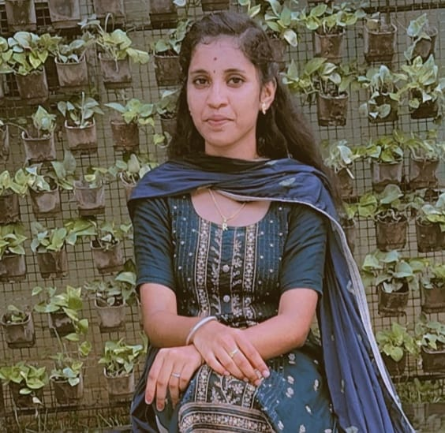

MUNIRANJANI R
Home

About me
Hello! I'm R.Muniranjani, a passionate web developer and a student at Sengunthar Engineering
College.
I'm currently in my 5th semester, and I have a keen interest in creating simple yet informative
websites. As part of my learning journey, I decided to create a website that provides valuable
information about Erode, a place close to my heart. This website is built entirely using HTML,
showcasing my ability to design and develop a functional and visually appealing site with just the
basics.
Project Overview
This website is dedicated to presenting key information about Erode, a city known for its
rich cultural heritage and vibrant history. The site features details on:
- Erode Tourist Places: This section highlights some of the must-visit places in Erode, such as the
Thindal Murugan Temple, the scenic Bavanisagar Dam, and the Vellode Bird sanctuary. Each location
is accompanied by a brief description to help visitors understand its significance.
- Famous Personalities from Erode: Erode has been the birthplace of many notable figures who have
made
significant contributions in various fields. This section profiles a few of these individuals, including
their achievements and impact on society.
Project Details
- Technology Used: The website is built exclusively with HTML, demonstrating the power of simple
web
technologies. No external libraries or frameworks were used, ensuring that the site is lightweight and
easy to navigate.
- Design Approach: The design of the website is minimalistic, focusing on content over form. The
layout is
straightforward, with easy-to-read text and intuitive navigation, making the site accessible to all
users.
- Challenges Faced: One of the main challenges was to present a wealth of information in a clear
and
concise manner using only HTML. However, this limitation also pushed me to think creatively about how to
structure content effectively without relying on more advanced styling or interactive features.
- Future Enhancements: In the future, I plan to expand this project by incorporating CSS for better
styling and JavaScript for interactivity. Additionally, I aim to include more comprehensive content
about Erode, such as its history, culture, and economy.
Inspiration Behind the Project
As someone who has always been fascinated by the history and culture of Erode, I wanted to create
a
platform that would allow others to explore and appreciate the city's unique charm. The idea for this
website was born out of a desire to share Erode's rich heritage with a wider audience, especially those who
might not be familiar with all that the city has to offer. Through this project, I hope to inspire more
people to visit Erode and discover its many hidden gems.
Learning Experience
This project has been a significant learning experience for me. Working with only HTML pushed me
to
understand the foundational aspects of web development more deeply. I learned how to structure content
effectively, create a logical flow of information, and ensure that the website is user-friendly despite the
absence of advanced design elements. This project also taught me the importance of planning and organizing
content, as well as the value of simplicity in design.
Key Features of the Website
- Responsive Design: Although the website is built using only HTML, I made sure to design it in a
way that
it can be easily viewed on different devices, from desktops to mobile phones. The content is organized
in a single column layout, which adapts well to varying screen sizes.
- Clean and Simple Navigation: The website features a straightforward navigation menu at the top of
each
page, allowing users to easily access different sections such as Tourist Places and Famous
Personalities. This ensures that users can find the information they're looking for without any hassle.
- Informative and Engaging Content: The content on the website is not only informative but also
engaging.
I've included interesting facts, historical anecdotes, and visually appealing images (if applicable) to
capture the attention of visitors and keep them interested in exploring more.
- Accessibility Considerations: I have also taken into account basic accessibility principles while
designing the website. The text is clear and readable, with sufficient contrast against the background.
I've used semantic HTML tags to ensure that screen readers can easily interpret the content, making the
site more inclusive for users with disabilities.
Personal Contribution
Every aspect of this website, from the initial idea to the final execution, has been personally
handled by
me. I conducted thorough research to gather accurate and relevant information about Erode, wrote all the
content, and meticulously designed each page. This project reflects my dedication to both my academic
studies and my passion for web development.
Conclusion
In conclusion, this website is more than just a project—it's a testament to my love for Erode and my
commitment to sharing its beauty with the world. While it may be simple in its current form, I believe it
effectively serves its purpose of informing and inspiring visitors. I look forward to continuing my journey
in web development, building upon the skills and knowledge I've gained from this experience.
Thank you